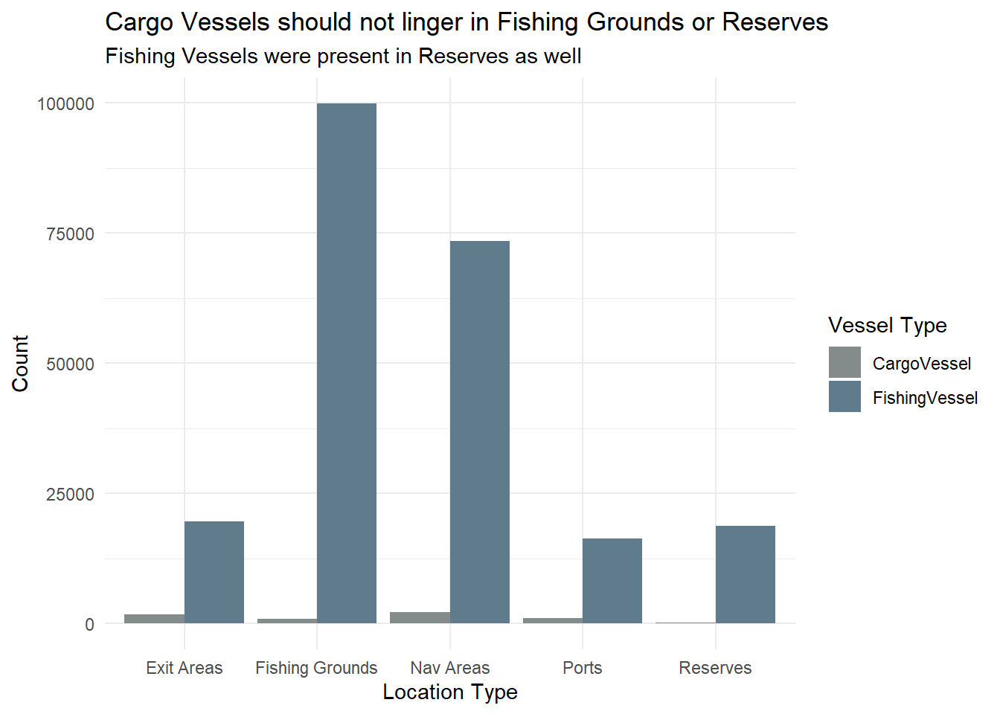
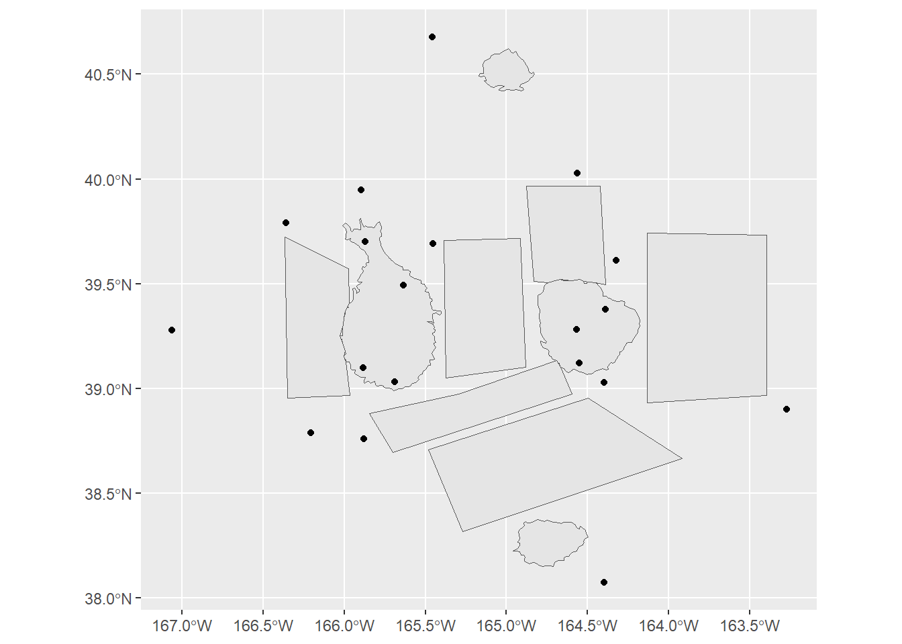
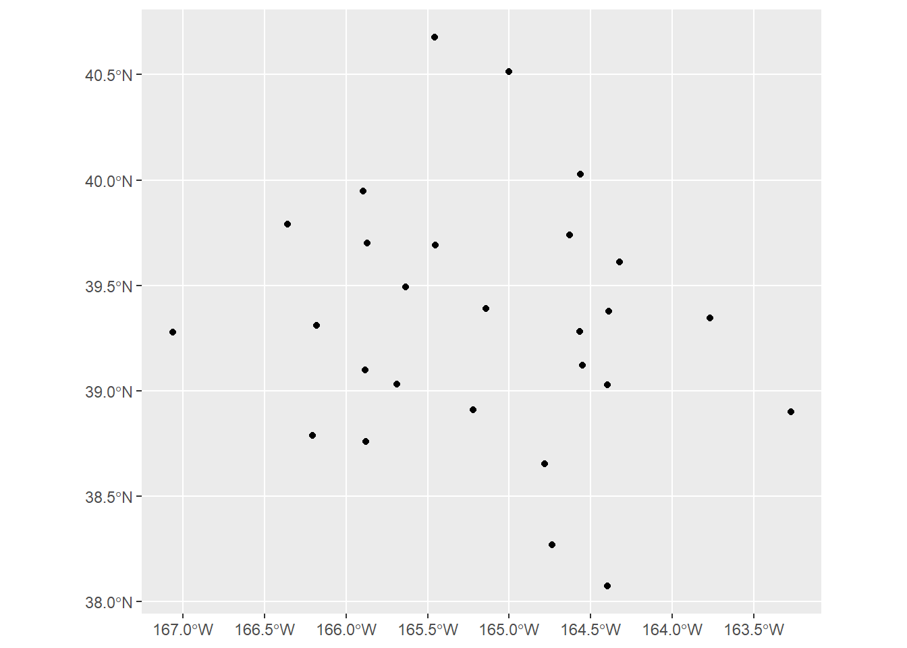

Code
pacman::p_load(jsonlite, tidygraph, igraph, ggraph, visNetwork, graphlayouts, ggforce, skimr, tidytext, tidyverse, plotly, shiny, DT, sf)In Oceanus, island life is defined by the coming and going of seafaring vessels, many of which are operated by commercial fishing companies. Typically, the movement of ships and goods are a sign of Oceanus’s healthy economy, especially in the fishing business. But mundane routines can be disrupted by a major event. Analysts at FishEye International, a non-profit organization that aims to find and prevent illegal fishing, need your help to better understand one such event.
FishEye has learned that SouthSeafood Express Corp has been caught fishing illegally. The scandal caused a major disruption in the close-knit fishing community. FishEye has been collecting data on ship movements and shipping records in hopes that they could assemble a cohesive store of knowledge that will allow them to better understand local commercial fishing behavior. FishEye processed open-source and commercial vessel tracking and shipping records into CatchNet: the Oceanus Knowledge Graph. Analysts examine and correct data as it is loaded but need your help to create analytical capabilities for this data.
FishEye analysts need your help to perform geographic and temporal analysis of the CatchNet data so they can prevent illegal fishing from happening again. Your task is to develop new visual analytics tools and workflows that can be used to discover and understand signatures of different types of behavior. Can you use your tool to visualize a signature of SouthSeafood Express Corp’s illegal behavior? FishEye needs your help to develop a workflow to find other instances of illegal behavior.
FishEye analysts have long wanted to better understand the flow of commercially caught fish through Oceanus’s many ports. But as they were loading data into CatchNet, they discovered they had purchased the wrong port records. They wanted to get the ship off-load records, but they instead got the port-exit records (essentially trucks/trains leaving the port area). Port exit records do not include which vessel that delivered the products. Given this limitation, develop a visualization system to associate vessels with their probable cargos. Which vessels deliver which products and when? What are the seasonal trends and anomalies in the port exit records?
Develop visualizations that illustrate the inappropriate behavior of SouthSeafood Express Corp vessels. How do their movement and catch contents compare to other fishing vessels? When and where did SouthSeafood Express Corp vessels perform their illegal fishing? How many different types of suspicious behaviors are observed? Use visual evidence to justify your conclusions.
To support further Fisheye investigations, develop visual analytics workflows that allow you to discover other vessels engaging in behaviors similar to SouthSeafood Express Corp’s illegal activities? Provide visual evidence of the similarities.
How did fishing activity change after SouthSeafood Express Corp was caught? What new behaviors in the Oceanus commercial fishing community are most suspicious and why?
For this Take-home Ex 3 - I will be focusing on Qn 1 and 2 first. If time is available, I will also attempt to go in to Qn 3.
To note that we will subsequently package these as part of our project.
Because the data are given in a json file format - we will have to load it using jsonlite. The following are the packages that we will be using for this ex.
pacman::p_load(jsonlite, tidygraph, igraph, ggraph, visNetwork, graphlayouts, ggforce, skimr, tidytext, tidyverse, plotly, shiny, DT, sf)
The following is the graph data provided:
Directed multi-graph, allowing multiple edges between nodes
5637 nodes
271752 edges
1 (weakly) connected component
Which covers:
Vessel Movements: Oceanus is outfitted with a transponder/ping system named the Oceanus Vessel Locator System (OVLS). Vessels are outfitted with a transponder and periodic ‘pings’ from base-stations results in a report of vessel locations at any time. The raw ping granularity is at the minute-level but post-processing has converted it into visit/dwell times. OVLS is generally reliable, though vessel records may be missing for a variety of reasons.
Node/Edge types and properties present
Entity.Vessel: Description of the vessel
Entity.Location: Description of a geographic location
Event.TransponderPing: Links a vessel to a location
Harbor Reports: Harbor masters regularly report the vessels found in their purview anytime during the day. This data is derived from a different system than OVLS (see “Vessel Movements”), though the data overlaps. Harbor Reports are provided on a different schedule from different harbors. Since no harbor reports every day, this data has lower temporal granularity than vessel movement data. Additionally, the Harbor Master is also responsible for proximate navigational beacon(s), so this data has lower spatial granularity as well. However, the list of vessels observed is considered canonical.
Node/edge types present:
Entity.Vessel
Entity.location
Event.HarborReport
Harbor Import Records: Vessels deliver cargo to the ports, and that cargo is brought into Oceanus. These records reflect the goods that *leave* the harbor to go to businesses in Oceanus or to be exported. It was filtered pre-ingest to focus on the delivery of raw fish. Because it is raw, fish leave the port quickly (generally one day after delivery). Due to clerical error, the records purchased by FishEye do not include the vessel that delivered the cargo.
Node/Edge types present:
Entity.location
Entity.Commodity.Fish
Entity.Document.DeliveryReport
Event.Transaction
We will use jsonlite to import the data:
mc2_data <- fromJSON ("data/mc2.json")Importing the nodes and edges as tibble data
mc2_edges <-
as_tibble(mc2_data$links) %>%
distinct()mc2_nodes <-
as_tibble(mc2_data$nodes) %>%
distinct()We first look at the types of nodes and how many of each are present in the data set:
type_counts_nodes <- mc2_nodes %>% count(type)
print(type_counts_nodes)Of note we have:
5307 Delivery Reports
178 Fishing Vessel and 100 Cargo Vessels
10 Types of Fish
From the table above, beside the date data type and inappropriate field name issues we discussed earlier, two additional data issues can be observed. They are:
The values in Activities and fish_species_present fields are in list data type, which will affect the ability to process and to analyse the data.
As shown in the screenshot below, some values in the Activities field are not ready to be analyse without further tidying (i.e. removing c(““)).
In the code chunk below, mutate() of dplyr and gsub() of Base R are used to perform the data todying task.
mc2_nodes_tidied <- mc2_nodes %>%
mutate(Activities = gsub("c[(]", "", Activities)) %>%
mutate(Activities = gsub("\"", "", Activities)) %>%
mutate(Activities = gsub("[)]", "", Activities)) mc2_nodes_tidied <- mc2_nodes_tidied %>%
mutate(fish_species_present = gsub("c[(]", "", fish_species_present)) %>%
mutate(fish_species_present = gsub("\"", "", fish_species_present)) %>%
mutate(fish_species_present = gsub("[)]", "", fish_species_present)) write_rds(mc2_nodes_tidied, "data/rds/mc2_nodes_tidied.rds")type_counts_edges <- mc2_edges %>% count(type)
print(type_counts_edges)The date format is not easily readable - so we need to convert them into something useful.
mc2_edges$time <- as_datetime(mc2_edges$time)
mc2_edges$"_last_edited_date" <- as_datetime(mc2_edges$"_last_edited_date")
mc2_edges$"_date_added" <- as_datetime(mc2_edges$"_date_added")
mc2_edges$"date" <- as_datetime("mc2_edges$date")glimpse(mc2_edges)mc2_edges <- mc2_edges %>%
rename("last_edited_by" = "_last_edited_by",
"date_added" = "_date_added",
"last_edited_date" = "_last_edited_date",
"raw_source" = "_raw_source",
"algo" = "_algorithm") word_list <- strsplit(mc2_edges$type, "\\.")
max_elements <- max(lengths(word_list))
word_list_padded <- lapply(word_list,
function(x) c(x, rep(NA, max_elements - length(x))))
word_df <- do.call(rbind, word_list_padded)
colnames(word_df) <- paste0("event", 1:max_elements)word_df <- as_tibble(word_df) %>%
select(event2, event3)
class(word_df)mc2_edges <- mc2_edges %>%
cbind(word_df)write_rds(mc2_edges, "data/rds/mc2_edges.rds")Loading the rds files:
mc2_edges <- read_rds("data/rds/mc2_edges.rds")
mc2_nodes <- read_rds("data/rds/mc2_nodes_tidied.rds")From the nodes data, we have the following information:
type_counts <- mc2_nodes %>%
group_by(type) %>%
summarise(count = n())
# Display the result
print(type_counts)# A tibble: 12 × 2
type count
<chr> <int>
1 Entity.Commodity.Fish 10
2 Entity.Document.DeliveryReport 5307
3 Entity.Location.City 6
4 Entity.Location.Point 12
5 Entity.Location.Region 6
6 Entity.Vessel.CargoVessel 100
7 Entity.Vessel.Ferry.Cargo 2
8 Entity.Vessel.Ferry.Passenger 3
9 Entity.Vessel.FishingVessel 178
10 Entity.Vessel.Other 5
11 Entity.Vessel.Research 2
12 Entity.Vessel.Tour 6| Data | Description | Remarks |
|---|---|---|
| Fish | 10 Species of Fish | Key fields are the:
|
| Location | Contains Point, City and Region | Contains the
|
| Delivery Report | 5307 Delivery Report | Contains the Also contains the qty by tons ( |
| Fishing Vessel | 178 Fishing Vessel | Contains the Other info includes: |
| Cargo Vessel | 100 Cargo Vessels | To explore given that these vessels can be used for transshipment or IUU activities. |
| Other Vessels | Such as Passenger, Research, Tour and Others | KIV - but dont think needed for our analysis |
We noticed that there are two columns for the name - one with name and the other with Name. Let us try to combine them into one column for easier analysis:
overlaps <- mc2_nodes %>%
filter(!is.na(Name) & !is.na(name) & tolower(Name) == tolower(name))
# Print overlaps
print("Overlaps between 'Name' and 'name' columns:")[1] "Overlaps between 'Name' and 'name' columns:"print(overlaps)# A tibble: 0 × 20
# ℹ 20 variables: type <chr>, _last_edited_by <chr>, _date_added <chr>,
# _last_edited_date <chr>, _raw_source <chr>, _algorithm <chr>, name <chr>,
# id <chr>, Name <chr>, Description <chr>, Activities <chr>, kind <chr>,
# qty_tons <dbl>, date <chr>, flag_country <chr>, company <chr>,
# tonnage <int>, length_overall <int>, style <chr>,
# fish_species_present <chr># Combine columns into one named 'name'
mc2_nodes <- mc2_nodes %>%
mutate(name = ifelse(is.na(name), Name, name)) %>%
select(-Name)Like how we split the text for edges, we will do so for the nodes data.
word_list <- strsplit(mc2_nodes$type, "\\.")
max_elements <- max(lengths(word_list))
word_list_padded <- lapply(word_list,
function(x) c(x, rep(NA, max_elements - length(x))))
word_df <- do.call(rbind, word_list_padded)
colnames(word_df) <- paste0("entity", 1:max_elements)word_df <- as_tibble(word_df) %>%
select(entity2, entity3)mc2_nodes <- mc2_nodes %>%
cbind(word_df)fish_species_df <- mc2_nodes %>%
filter(entity3 == 'Region') %>%
select(name, fish_species_present)# Convert the fish_species_present column into a long format data frame for plotting
long_fish_species_df <- fish_species_df %>%
separate_rows(fish_species_present, sep = ",") %>%
mutate(fish_species_present = str_trim(fish_species_present)) %>%
rename(region = name, fish_species = fish_species_present)
reserve_only_species <- c('Sockfish/Pisces foetida', 'Offidiaa/Piscis osseus', 'Helenaa/Pisces satis') # Example reserve-only species
# Add a column to indicate if a fish species is reserve-only
long_fish_species_df <- long_fish_species_df %>%
mutate(reserve_only = ifelse(fish_species %in% reserve_only_species, TRUE, FALSE)) %>%
mutate(fishtype = sub("/.*", "", fish_species))ggplot(long_fish_species_df, aes(x = region, y = fishtype, color = fishtype, size = reserve_only)) +
geom_point() +
scale_size_manual(values = c(`FALSE` = 2, `TRUE` = 4), guide = FALSE) +
labs(title = "Fish Species Present in Different Regions",
subtitle = "Salmon is not found in the Regions",
x = "Region") +
theme_minimal() +
theme(axis.text.x = element_text(angle = 30, hjust = 1),
legend.position = "none",
axis.title.y = element_blank())
type_counts <- mc2_edges %>%
group_by(type) %>%
summarise(count = n())
# Display the result
print(type_counts)# A tibble: 3 × 2
type count
<chr> <int>
1 Event.HarborReport 2487
2 Event.Transaction 10614
3 Event.TransportEvent.TransponderPing 258542We have 3 groups of data in the edges mainly the HarborReport, Transaction and the TransponderPing.
| Data | Description | Remarks |
|---|---|---|
| Harbor Reports | Contains information about the vessel docking at which harbor. There is a key column, but not sure what it means. Contains a few other columns with aphorism, holiday greeting etc but seems not impt for our analysis here. |
Key fields here are:
|
| Transaction | Information from OCEANS Each transaction has two rows - one connecting the transaction to the City, the other to the fish species. |
Key fields here are:
|
| Transponder Ping | Information from OVLS Contains information about the time of ping, dwell time, and location. |
Key fields here are:
|
We want to know which vessel offload their cargo at which port on which date and time.
We can first utilised the harbor reports to find out which vessels have been to which harbor - this would give us an initial starting point. As the list of vessels observed is canonical (i.e. accurate) - this can help with our analysis later. However, we note that the date/time is not very accurate here.
Next, we need to wrangle with the transponder data. We want to have a list of all the vessels, by their date/time, which date they visited a harbor and on which day they left a harbor.
So based on the above data, we would generate a data frame with the different rows of date/time and list out in the columns - vessel, location_transponder (which port), within harbor report (yes or no).
Next we will combine the transaction with the delivery report first. So we will be able to match the date of delivery, cargo_id, qty, fish, and which harbor.
Then finally, we can combine the data based on the date that a vessel enter the port, and exit the port, the cargo during this time point.
vessel_list <- mc2_nodes %>%
filter(type %in% c("Entity.Vessel.FishingVessel", "Entity.Vessel.CargoVessel")) %>%
mutate(type = case_when(
type == "Entity.Vessel.FishingVessel" ~ "FishingVessel",
type == "Entity.Vessel.CargoVessel" ~ "CargoVessel"
)) %>%
select(type, name, id, flag_country, tonnage, length_overall, company) %>%
rename(vessel = id)harbor_records <- mc2_edges %>%
filter(type == "Event.HarborReport") %>%
select(date_added, last_edited_date, source, target) %>%
rename("vessel" = "source",
"port" = "target") harbor_records <- harbor_records %>%
left_join(vessel_list, by = "vessel") %>%
filter(!is.na(name) & name != "")visit_counts <- harbor_records %>%
mutate(month = month(date_added, label = TRUE)) %>%
group_by(port, vessel, type, month) %>%
summarise(visit_count = n(),
visit_dates = paste(date_added, collapse = ', ')) %>%
ungroup()
visits_fishing <- visit_counts %>%
filter(type == "FishingVessel")
visits_fishing <- visits_fishing %>%
complete(month, port, fill = list(visit_count = NA))
visits_cargo <- visit_counts %>%
filter(type == "CargoVessel")
visits_cargo <- visits_cargo %>%
complete(month, port, fill = list(visit_count = NA))ggplot(visits_fishing, aes(x = month, y = port, fill = visit_count)) +
geom_tile(color = "black") +
scale_fill_gradient(low = "azure1", high = "deepskyblue4", na.value = "white") +
labs(title = "Paackland and Haacklee more frequented by Fishing Vessels",
x = "Month",
y = "Port",
subtitle = "Based on the Harbor Records",
fill = "Number of Visits") +
theme_minimal() +
theme(axis.text.x = element_text(angle = 45, hjust = 1))
ggplot(visits_cargo, aes(x = month, y = port, fill = visit_count)) +
geom_tile(color = "black") +
scale_fill_gradient(low = "azure1", high = "deepskyblue4", na.value = "white") +
labs(title = "Paackland and Lomark more frequented by Cargo Vessels",
x = "Month",
y = "Port",
subtitle = "Based on the Harbor Records",
fill = "Number of Visits") +
theme_minimal() +
theme(axis.text.x = element_text(angle = 45, hjust = 1))transponder <- mc2_edges %>%
filter(type == "Event.TransportEvent.TransponderPing") %>%
select(time, dwell, source, target) %>%
rename("id" = "target")# Selecting only the 'id' and 'vessel' columns from vessel_list
vessel_subset <- vessel_list %>%
select(vessel, name, type) %>%
rename (id = vessel)
# Performing left join on transponder and vessel_subset
transponder <- left_join(transponder, vessel_subset, by = "id")
# Filtering only those Cargo and Fishing Vessels
transponder <- transponder %>%
filter(!is.na(type))For us to better visualise the transponder data, we will split the data by months and also group it by the days of the week.
transponder <- transponder %>%
mutate(month = month(time),
day = wday(time, label = TRUE))We want to also indicate if the vessel was within a port or not.
transponder <- transponder %>%
mutate(area =
ifelse (grepl("^City of", source), "Ports",
ifelse(source %in% c("Cod Table", "Tuna Shelf", "Wrasse Beds"), "Fishing Grounds",
ifelse(grepl("^Nav", source), "Nav Areas",
ifelse(source %in% c("Don Limpet Preserve", "Nemo Reef", "Ghoti Preserve"), "Reserves",
ifelse(grepl("^Exit", source), "Exit Areas",
"Unknown")))))) %>%
rename("location" = "source",
"vessel" = "name")transponder <- transponder %>%
arrange(vessel, time) %>%
group_by(vessel, location) %>%
mutate(
stay_start = time,
stay_end = time + dwell,
stay_duration = as.numeric(difftime(stay_end, stay_start, units = "mins"))
)
# Filter out rows where location is NA or stay_duration is NA or negative
transponder <- transponder %>%
filter(!is.na(location) & !is.na(stay_duration) & stay_duration >= 0)# Plotting
ggplot(transponder, aes(x = area, fill = type)) +
geom_bar(position = "dodge", stat = "count") +
labs(title = "Cargo Vessels should not linger in Fishing Grounds or Reserves",
x = "Location Type",
y = "Count",
fill = "Vessel Type",
subtitle = "Fishing Vessels were present in Reserves as well") +
scale_fill_manual(values = c("azure4", "lightskyblue4")) +
theme_minimal()
reserves_data <- transponder %>%
filter(area == "Reserves")
# Count the number of unique vessels in the reserves area by vessel type
unique_vessels_count <- reserves_data %>%
group_by(type) %>%
summarize(unique_vessels = n_distinct(vessel))
mean_value <- mean(reserves_data$stay_duration)
median_value <- median(reserves_data$stay_duration)
# Plot a box plot of the dwell time in the reserves area
boxplot <- ggplot(reserves_data, aes(x = type, y = stay_duration, fill = type)) +
geom_boxplot(fill = "azure3", color = "lightskyblue4", outlier.shape = 16, outlier.size = 2, outlier.colour = "deepskyblue4") +
geom_hline(yintercept = mean_value, color = "azure4", linetype = "dashed", size = 1) + # Add mean line
geom_hline(yintercept = median_value, color = "lightblue", linetype = "dotted", size = 1) +
labs(title = "Many Instances of Fishing Vessel Overspending Time in Reserves",
x = NULL,
y = "Stay Duration (mins) - Log Scale",
subtitle = "71 Cargo Vessels and 131 Fishing Vessels spent time in Reserves") +
scale_y_log10() +
theme_minimal()
# Print the number of unique vessels in the reserves area
print(unique_vessels_count)# A tibble: 2 × 2
type unique_vessels
<chr> <int>
1 CargoVessel 71
2 FishingVessel 131# Display the box plot
print(boxplot)
# Filter the data for cargo vessels in fishing grounds
cargo_fishing_data <- transponder %>%
filter(type == "CargoVessel" & area == "Fishing Grounds")
# Calculate mean and median values
mean_value <- mean(cargo_fishing_data$stay_duration)
median_value <- median(cargo_fishing_data$stay_duration)
# Plot a box plot of the dwell time for cargo vessels in fishing grounds
ggplot(cargo_fishing_data, aes(x = "", y = stay_duration)) +
geom_boxplot(fill = "azure3", color = "lightskyblue4") +
geom_hline(yintercept = mean_value, color = "azure4", linetype = "dashed", size = 1) + # Add mean line
geom_hline(yintercept = median_value, color = "lightblue", linetype = "dotted", size = 1) +
scale_y_log10() +
labs(title = "Cargo Vessels spending more time in Fishing Grounds",
x = NULL,
y = "Stay Duration (min) (log scale)") +
theme_minimal()vessels_above_mean <- cargo_fishing_data %>%
filter(stay_duration > mean_value)
# Count the number of unique vessels
num_vessels_above_mean <- n_distinct(vessels_above_mean$vessel)
# Print the count
print(num_vessels_above_mean)[1] 1Notice that there is only 1 Cargo Vessel which stays in the fishing grounds above the mean duration - Nautical Nomad (Tuna Shelf and Wrasse Beds).
Why is this out of the norm? Typical cargo vessels could have only just transited across the fishing grounds, but if the cargo vessel stays beyond the transit time, they could be involved in illegal fishing activities, e.g. transshipment at sea as shown in the photo below.

ggplot(transponder, aes(x = stay_duration)) +
geom_histogram(binwidth = 100, fill = "azure4", color = "black") +
xlim (0, 5000) +
labs(title = "Stay Duration is typically about 100 mins", x = "Stay Duration (mins)", y = "Frequency")+
theme_minimal()We will notice that there are vessels with dwell time = 0. This is so for the first row of data for each vessel, where it seems to initialise the starting of the location tracking of each vessel. However, there are also other times, where the dwell time was 0. Thinking that this could due to the vessel passing by the Port or could have traveled within the vicinity.
# Summarize data to get the number of unique vessels in each reserve area
vessels_reserve <- reserves_data %>%
group_by(location) %>%
summarise(unique_vessel_count = n_distinct(vessel))
reserves_data <- reserves_data %>%
mutate (stay_duration_min = stay_duration/60)
# Bar chart showing the number of unique vessels in different reserve areas
ggplot(vessels_reserve, aes(x = location, y = unique_vessel_count)) +
geom_bar(stat = "identity", fill = "azure4") +
labs(title = "Nemo Reef saw the most vessels entering the reserve",
x = "Reserve Area",
y = "Number of Unique Vessels") +
geom_text(aes(label = unique_vessel_count), vjust = -0.5, size = 3.5) +
theme_minimal()
# Boxplot of stay_duration in different reserve areas
ggplot(reserves_data, aes(x = location, y = stay_duration_min)) +
geom_boxplot(fill = "lightskyblue3") +
labs(title = "But Ghoti Preserve saw longer stay duration",
x = "Reserve Area",
y = "Stay Duration (mins)") +
theme_minimal()

port_data <- transponder %>%
filter(area == "Ports")
mean_value <- mean(port_data$stay_duration)
median_value <- median(port_data$stay_duration)
# Plot a box plot of the dwell time in the reserves area
boxplot <- ggplot(port_data, aes(x = type, y = stay_duration, fill = type)) +
geom_boxplot(fill = "azure3", color = "lightskyblue4", outlier.shape = 16, outlier.size = 2, outlier.colour = "deepskyblue4") +
geom_hline(yintercept = mean_value, color = "azure4", linetype = "dashed", size = 1) + # Add mean line
geom_hline(yintercept = median_value, color = "lightblue", linetype = "dotted", size = 1) +
labs(title = "Cargo Vessels spend less time at ports as compared to Fishing Vessels",
x = NULL,
y = "Stay Duration (mins) - Log Scale",
subtitle = "Average Time: 1985mins ; Median Time: 1675mins") +
scale_y_log10() +
theme_minimal()
# Display the box plot
print(boxplot)
fishes <- mc2_nodes %>%
filter(type == "Entity.Commodity.Fish") %>%
select("name", "id") %>%
rename("fishid" = "id")region <- mc2_nodes %>%
filter(type == "Entity.Location.Region")region <- region %>%
separate_rows(fish_species_present, sep = ",\\s*") region <- region %>%
left_join(fishes, by = c("fish_species_present" = "name"))possible_catches <- region %>%
group_by(name) %>%
summarize(fishes = list(unique(fishid))) %>%
rename ("location" = "name")mapped_data <- transponder %>%
left_join(possible_catches, by = "location") %>%
arrange(id, time)# Identify port returns
mapped_data$is_port_return <- grepl("^City of", mapped_data$location)catch_summary <- mapped_data %>%
group_by(id, vessel, return_number = cumsum(is_port_return)) %>%
summarise(
start_port = first(location),
start_leg = first(time),
last_point_b4_port = last(location),
time_before_port = last(time),
time_check = first(time + dwell),
possible_catches = list(unique(unlist(fishes)))
)catch_summary <- catch_summary %>%
mutate(end_port = lead(start_port, order_by = id),
time_into_port = lead(start_leg, order_by = id),
time_exit_port = lead(time_check, order_by = id))all_catch_summary <- catch_summary %>%
unnest(possible_catches) %>%
rename ("fish" = "possible_catches",
"port" = "end_port",
"name" = "vessel")
all_catch_summary <- all_catch_summary %>%
left_join(vessel_list, by = "name")
all_catch_summary <- all_catch_summary %>%
left_join(fishes, by = c("fish" = "fishid"))
all_catch_summary <- all_catch_summary %>%
mutate(fishtype = sub("/.*", "", name.y))
all_catch_summary <- all_catch_summary %>%
select (name.x, port, time_into_port, time_exit_port, type, flag_country, tonnage, company, fishtype) %>%
rename ("vessel" = "name.x")
all_catch_summary <- all_catch_summary %>%
mutate(month = month(time_into_port,label = TRUE))
catch_month_summary <- all_catch_summary %>%
group_by(month, fishtype) %>%
summarise(vessel_count = n_distinct(vessel))ggplot(catch_month_summary, aes(x = month, y = fishtype, size = vessel_count)) +
geom_point(color = "lightskyblue4", alpha = 0.8) +
scale_size_continuous(range = c(1, 10)) + # Adjust the range of the dot sizes
labs(title = "Possible Fish Types Caught by Month",
x = "Month",
y = "Fish Type",
subtitle = "Based on the transponder data and their duration in the region",
size = "Number of Vessels") +
theme_minimal()
Here, we attempt to match the catch summary with the harbor records, so that we exclude transponder pings that are not part of the harbor records.
harbor_summary <- catch_summary %>%
rowwise() %>%
mutate(
harbor = ifelse(any(harbor_records$name == vessel &
harbor_records$port == end_port &
harbor_records$date_added >= time_into_port),
"Y", "N")
) %>%
ungroup()
harbor_summary <- harbor_summary%>%
filter(harbor == "Y")deliveryreports <- mc2_nodes %>%
filter(type == "Entity.Document.DeliveryReport")%>%
select(id, qty_tons, date) # Plot histogram
ggplot(deliveryreports, aes(x = qty_tons)) +
geom_histogram(binwidth = 5, fill = "azure4", color = "black") +
labs(title = "There are 5307 delivery reports and the qty ranges from 0 to ~80tons",
x = "Quantity in Tons",
y = "Frequency",
subtitle = "315 values are 0 and below (to remove these data)") +
theme_minimal() +
geom_vline(xintercept = 0, linetype = "dashed", color = "deepskyblue4", size = 1)
delivery_reports_0andbelow <- deliveryreports %>%
filter (qty_tons <= 0)delivery_reports <- deliveryreports %>%
filter (qty_tons > 0)delivery_trans <- mc2_edges %>%
filter(type == "Event.Transaction") %>%
select(source, target, date_added) %>%
rename("id" = "source") delivery_trans$index <- ifelse(seq(nrow(delivery_trans)) %% 2 == 0, "port", "fish")
delivery_trans1 <- delivery_trans %>%
pivot_wider(names_from = index, values_from = target) %>%
rename ("fishid" = "fish")delivery_reports <- delivery_reports %>%
left_join(delivery_trans1, by = "id")delivery_reports <- delivery_reports %>%
left_join(fishes, by = "fishid")delivery_reports <- delivery_reports %>%
mutate(fishtype = sub("/.*", "", name))delivery_reports <- delivery_reports %>%
select(-fishid, -name, -date_added)custom_labels <- c("City of Haacklee" = "Haacklee",
"City of Himark" = "Himark",
"City of Lomark" = "Lomark",
"City of Paackland" = "Paackland",
"City of South Paackland" = "S.Paackland")
ggplot(delivery_reports, aes(x = port, y = qty_tons)) +
geom_boxplot(fill = "azure4", color = "black") +
labs(title = "Similar Range in terms of Qty at the different Ports",
x = "Port",
y = "Quantity in Tons") +
scale_x_discrete(labels = custom_labels) +
theme_minimal()
# Summarize the data to count the number of deliveries for each combination of port and fish type
delivery_summary <- delivery_reports %>%
group_by(port, fishtype) %>%
summarize(num_deliveries = n())
ggplot(delivery_summary, aes(x = port, y = fishtype, color = fishtype, size = num_deliveries)) +
geom_point(alpha = 1) + # Adjust alpha for transparency if needed
labs(title = "Sockfish, Salmon, Offidiaa and Helenaa are found at the Ports",
x = NULL,
y = NULL,
size = "Number of Deliveries") +
scale_x_discrete(labels = custom_labels) +
theme_minimal() +
theme(plot.title = element_text(size = 11, face = "bold")) 
From the graph, we identified that Sockfish, Salmon, Offidiaa and Helenaa are found at the various ports. These are fishes that are not found in the fishing grounds, so identifying the vessels that offload these cargoes can help to narrow down IUU fishing.
delivery_reports <- delivery_reports %>%
mutate (date = as.Date(date))
# Extract month from the date
delivery_reports <- delivery_reports %>%
mutate(month = floor_date(date, "month"))
# Summarize the data to count the number of deliveries for each combination of month and fish type
monthly_summary <- delivery_reports %>%
group_by(month, fishtype) %>%
summarize(num_deliveries = n())
# Calculate the mean deliveries per fish type
mean_deliveries <- monthly_summary %>%
group_by(fishtype) %>%
summarize(mean_deliveries = mean(num_deliveries))
# Find the highest delivery per fish type
max_deliveries <- monthly_summary %>%
group_by(fishtype) %>%
filter(num_deliveries == max(num_deliveries))
# Merge the summary data to add the mean delivery to each row
monthly_summary <- monthly_summary %>%
left_join(mean_deliveries, by = "fishtype")
# Plot the monthly delivery
ggplot(monthly_summary, aes(x = month, y = num_deliveries, color = fishtype)) +
geom_line(size = 1) + # Line plot for monthly trend
geom_point(size = 2) + # Add points for each month
labs(title = "Cod has the highest number of deliveries",
x = "Month",
y = "Number of Deliveries",
subtitle = "The four illegal fish species are delivered in certain months only",
color = "Fish Type") +
theme_minimal() +
theme(plot.title = element_text(size = 11, face = "bold"),
legend.position = "none") +
geom_text(data = max_deliveries, aes(label = num_deliveries), size = 2, vjust = -1) +
scale_y_continuous(expand = expansion(mult = c(0, 0.2))) +
facet_wrap(~ fishtype) 
filtered_summary <- delivery_reports %>%
group_by(month, fishtype, port) %>%
summarize(num_deliveries = n())filtered_summary <- filtered_summary %>%
filter(fishtype %in% c("Sockfish", "Salmon", "Offidiaa", "Helenaa"))
# Calculate the total deliveries across all ports for each month
total_deliveries <- filtered_summary %>%
group_by(month, fishtype) %>%
summarise(num_deliveries = sum(num_deliveries)) %>%
mutate(port = "Total")
# Combine the filtered summary data with the total deliveries
combined_summary <- bind_rows(filtered_summary, total_deliveries)
# Plot the monthly delivery
ggplot(combined_summary, aes(x = month, y = num_deliveries, color = fishtype)) +
geom_line(size = 1) + # Line plot for monthly trend
geom_point(size = 2) + # Add points for each month
labs(title = "Paackland and Himark saw high delivery of the four fish species",
x = "Month",
y = "Number of Deliveries",
subtitle = "Salmon is mostly delivered through Haacklee and Paackland",
color = "Fish Type") +
theme_minimal() +
scale_x_date(date_breaks = "1 month", date_labels = "%b", limits = as.Date(c("2035-02-01", "2035-11-31"))) +
geom_text(data = combined_summary, aes(label = num_deliveries), size = 2, vjust = -1) +
theme(plot.title = element_text(size = 14, face = "bold"),
axis.text.x = element_text(size = 5)) +
facet_wrap(~ port)
expanded_catch_summary <- harbor_summary %>%
unnest(possible_catches) %>%
rename ("fish" = "possible_catches",
"port" = "end_port",
"name" = "vessel")expanded_catch_summary <- expanded_catch_summary %>%
left_join(vessel_list, by = "name")expanded_catch_summary <- expanded_catch_summary %>%
left_join(fishes, by = c("fish" = "fishid"))expanded_catch_summary <- expanded_catch_summary %>%
mutate(fishtype = sub("/.*", "", name.y))Clean up the summary.
final_catch_summary <- expanded_catch_summary %>%
select (name.x, port, time_into_port, time_exit_port, type, flag_country, tonnage, company, fishtype) %>%
rename ("vessel" = "name.x")matched_data <- final_catch_summary %>%
left_join(delivery_reports, by = c("port", "fishtype")) %>%
filter(date >= time_into_port + 0.5 &
date <= time_exit_port + 1) %>%
mutate(cargo = ifelse(!is.na(id), as.character(id), "N"))summary_cargo <- matched_data %>%
group_by(id) %>%
summarise(count = n())
summary_cargo_unique <- summary_cargo %>%
filter(count==1)# Summarize the data to count the number of deliveries for each combination of port and fish type
match_summary <- matched_data %>%
group_by(port, fishtype) %>%
summarize(num_deliveries = n())
ggplot(match_summary, aes(x = port, y = fishtype, color = fishtype, size = num_deliveries)) +
geom_point(alpha = 1) + # Adjust alpha for transparency if needed
labs(title = "Delivery of the 4 illegal species are not matched fully",
x = NULL,
y = NULL,
subtitle = "Perhaps the transponder is off when such deliveries are made",
size = "Number of Deliveries") +
scale_x_discrete(labels = custom_labels) +
theme_minimal() +
theme(plot.title = element_text(size = 11, face = "bold")) 
matched_data_harbor <- harbor_records %>%
left_join(delivery_reports, by = c("port")) %>%
filter(date >= date_added &
date <= date_added + 1)summary_cargo <- matched_data_harbor %>%
group_by(id) %>%
summarise(count = n())
summary_cargo_unique <- summary_cargo %>%
filter(count==1)# Summarize the data to count the number of deliveries for each combination of port and fish type
match_summary <- matched_data_harbor %>%
group_by(port, fishtype) %>%
summarize(num_deliveries = n())
ggplot(match_summary, aes(x = port, y = fishtype, color = fishtype, size = num_deliveries)) +
geom_point(alpha = 1) + # Adjust alpha for transparency if needed
labs(title = "More records matched, with 1613 unique matches",
x = NULL,
y = NULL,
subtitle = "Matching with the harbor records only could be more accurate",
size = "Number of Deliveries") +
scale_x_discrete(labels = custom_labels) +
theme_minimal() +
theme(plot.title = element_text(size = 11, face = "bold")) 
edges <- matched_data_harbor %>%
select(vessel, id) %>%
distinct() %>%
filter(!is.na(vessel) & !is.na(id))
# Create nodes for the network graph
nodes <- data.frame(name = unique(c(edges$vessel, edges$id)))
# Create igraph object
graph <- graph_from_data_frame(d = edges, vertices = nodes, directed = FALSE)Trying to plot using network graphs - but this is a mess - need to tidy up!
# Plot the network graph
ggraph(graph, layout = "fr") +
geom_edge_link(aes(start_cap = label_rect(node1.name), end_cap = label_rect(node2.name)), arrow = arrow(type = "closed", length = unit(4, "mm")), color = "gray") +
geom_node_point(aes(color = name %in% edges$vessel), size = 5) +
geom_node_text(aes(label = name), vjust = 1.5, size = 3) +
labs(title = "Network Graph of Vessels and Linked Cargo") +
theme_void() +
theme(legend.position = "none", plot.title = element_text(hjust = 0.5, face = "bold"))
SEC_vessel <- vessel_list %>%
filter (company == "SouthSeafood Express Corp")We found only 2 vessels linked to SEC:
Snapper Snatcher (snappersnatcher7be)- a small 100 ton vessel
Roach Robber (roachrobberdb6)- a 11700 ton bigger vessel
Importing the geographical data in geojson file format
OceanusGeography = st_read("data/OceanusGeography.geojson") %>%
st_transform(crs = 4326)Reading layer `OceanusGeography' from data source
`C:\zjjgithubb\ISSS608VA\TakehomeEx\ex03\data\OceanusGeography.geojson'
using driver `GeoJSON'
Simple feature collection with 29 features and 7 fields
Geometry type: GEOMETRY
Dimension: XY
Bounding box: xmin: -167.0654 ymin: 38.07452 xmax: -163.2723 ymax: 40.67775
Geodetic CRS: WGS 84Visualising the geojson:
ggplot(data = OceanusGeography) +
geom_sf()
write_rds(OceanusGeography, "data/rds/OceanusGeography.rds")OceanusLocations <- st_read(dsn = "data/shp",
layer = "Oceanus Geography")Reading layer `Oceanus Geography' from data source
`C:\zjjgithubb\ISSS608VA\TakehomeEx\ex03\data\shp' using driver `ESRI Shapefile'
Simple feature collection with 27 features and 7 fields
Geometry type: POINT
Dimension: XY
Bounding box: xmin: -167.0654 ymin: 38.07452 xmax: -163.2723 ymax: 40.67775
Geodetic CRS: WGS 84ggplot(data = OceanusLocations) +
geom_sf()
write_rds(OceanusLocations, "data/rds/OceanusLocations.rds")vessel_movement_data <- mc2_edges %>%
filter(event3 == "TransponderPing") %>%
select(time, dwell, source, target)unique(vessel_movement_data$source) [1] "City of Haacklee" "City of Lomark"
[3] "City of Himark" "City of Paackland"
[5] "City of South Paackland" "City of Port Grove"
[7] "Exit West" "Nav 3"
[9] "Nav D" "Nav B"
[11] "Nav A" "Nav C"
[13] "Nav 2" "Nav 1"
[15] "Exit East" "Exit South"
[17] "Exit North" "Nav E"
[19] "Cod Table" "Ghoti Preserve"
[21] "Wrasse Beds" "Nemo Reef"
[23] "Don Limpet Preserve" "Tuna Shelf" unique(OceanusLocations$Name) [1] "Haacklee" "Port Grove" "Lomark"
[4] "Himark" "Paackland" "Centralia"
[7] "South Paackland" "Exit West" "Nav 3"
[10] "Nav D" "Nav B" "Nav A"
[13] "Nav C" "Nav 2" "Nav 1"
[16] "Exit East" "Exit South" "Exit North"
[19] "Nav E" "Don Limpet Preserve" "Tuna Shelf"
[22] "Makara Shoal" "Silent Sanctuary" "Cod Table"
[25] "Ghoti Preserve" "Wrasse Beds" "Nemo Reef" We note that the vessel movement data’s name of the location did not match the OceanusLocations. So we need to match.
vessel_movement_data <- vessel_movement_data%>%
mutate(source = gsub("^City of", "", source)) %>%
mutate(source = gsub("^\\s+", "", source))coords <- st_coordinates(OceanusLocations)OceanusLocations_df <- OceanusLocations %>%
st_drop_geometry()OceanusLocations_df$XCOORD <- coords[, "X"]
OceanusLocations_df$YCOORD <- coords[, "Y"]OceanusLocations_df <- OceanusLocations_df %>%
select(Name, X.Kind, XCOORD, YCOORD) %>%
rename(Loc_Type = X.Kind)vessel_movement_data <- vessel_movement_data %>%
left_join(OceanusLocations_df,
by = c("source" = "Name"))write_rds(vessel_movement_data, "data/rds/vessel_movement_data.rds")vessel_movement_data <- read_rds("data/rds/vessel_movement_data.rds")
OceanusGeography <- read_rds("data/rds/OceanusGeography.rds")vessel_movement_sf <- vessel_movement_data %>%
st_as_sf(coords = c("XCOORD", "YCOORD"),
crs = 4326)vessel_movement_sf <- vessel_movement_sf %>%
arrange(target, time)vessel_trajectory <- vessel_movement_sf %>%
group_by(target) %>%
summarize(do_union = FALSE) %>%
st_cast("LINESTRING")vessel_trajectory_selected <- vessel_trajectory %>%
filter(target == "snappersnatcher7be")For now, we will look at the total amount of time that each vessel has spent at each location. We will sum the dwell time (converted to mins) at each location.
points_data <- vessel_movement_sf %>%
filter (target == "snappersnatcher7be") %>%
group_by(target, geometry) %>%
summarize(dwell_time = sum(dwell)/60)
# Ensure the geometry column is retained as a 'geometry' class
st_geometry(points_data) <- points_data$geometrySubsequently, it will be richer if we are able to plot the data by months. This would help us better visualise and compare the movement of the vessels.
vessel_trajectory_robber <- vessel_trajectory %>%
filter(target == "roachrobberdb6")
points_data_robber <- vessel_movement_sf %>%
filter (target == "roachrobberdb6") %>%
group_by(target, geometry) %>%
summarize(dwell_time = sum(dwell)/60)
# Ensure the geometry column is retained as a 'geometry' class
st_geometry(points_data_robber) <- points_data_robber$geometryggplot() +
geom_sf(data = OceanusGeography) +
geom_sf_text(data = OceanusGeography, aes(label = Name), nudge_y = 0.1, size = 2) +
geom_sf(data = vessel_trajectory_selected,
color = "blue", # Set the color of the trajectory
linewidth = 1.2, alpha = 0.5) +
geom_point(data = points_data,
aes(x = st_coordinates(geometry)[, "X"],
y = st_coordinates(geometry)[, "Y"],
size = dwell_time, color = dwell_time),
alpha = 0.7) + # Add points with size based on dwell time
scale_size_continuous(name = "Dwell Time (mins)") +
scale_color_gradient(name = "Dwell Time (mins)", low = "lavender", high = "mediumpurple4") +
theme_minimal() +
labs(title = "Snapper Snatcher spent substantial time within Ghouti Preserve",
x = "Longitude", y = "Latitude")
ggplot() +
geom_sf(data = OceanusGeography) +
geom_sf_text(data = OceanusGeography, aes(label = Name), nudge_y = 0.1, size = 2) +
geom_sf(data = vessel_trajectory_robber,
color = "blue", # Set the color of the trajectory
linewidth = 1.2, alpha = 0.5) +
geom_point(data = points_data_robber,
aes(x = st_coordinates(geometry)[, "X"],
y = st_coordinates(geometry)[, "Y"],
size = dwell_time, color = dwell_time),
alpha = 0.7) + # Add points with size based on dwell time
scale_size_continuous(name = "Dwell Time (mins)") +
scale_color_gradient(name = "Dwell Time (mins)", low = "lavender", high = "mediumpurple4") +
theme_minimal() +
labs(title = "Roach Robber spent time mostly at Himark, Wrasse Beds and Nav C",
x = "Longitude", y = "Latitude")
Snapper Snatcher also spent time at Exit East - they are likely to engage in Deep Sea Fishing there (activities tied to the Exit Areas). This is also likely where they can fish for Salmon (assumption) - given that Salmon was not found in the other fishing grounds.
combined_path <- bind_rows(vessel_trajectory_selected, vessel_trajectory_robber)
points_data_combined <- bind_rows(points_data, points_data_robber)
wrapped_subtitle <- str_wrap("Transhipment could have occured at these locations", width = 60)
ggplot() +
geom_sf(data = OceanusGeography) +
geom_sf_text(data = OceanusGeography, aes(label = Name), nudge_y = 0.1, size = 2) +
geom_sf(data = combined_path, aes(color = target), linewidth = 1.2, alpha = 0.2) +
scale_color_manual(name = "Path",
values = c("snappersnatcher7be" = "blue", "roachrobberdb6" = "red")) +
geom_point(data = points_data_combined, aes(x = st_coordinates(geometry)[, "X"],
y = st_coordinates(geometry)[, "Y"],
size = dwell_time),
alpha = 0.7) +
scale_size_continuous(name = "Dwell Time (mins)") +
theme_minimal() +
labs(title = "Common Points at Lomark, Wrasse Beds and Nav C",
subtitle = wrapped_subtitle,
x = "Longitude", y = "Latitude")SEC_catches <- all_catch_summary %>%
filter (vessel %in% c("Snapper Snatcher", "Roach Robber"))SEC_catch_summary <- SEC_catches %>%
group_by(vessel, fishtype) %>%
summarise(fishtype_count = n()) %>%
ungroup()
SEC_catch_summary# A tibble: 9 × 3
vessel fishtype fishtype_count
<chr> <chr> <int>
1 Roach Robber Beauvoir 22
2 Roach Robber Birdseye 22
3 Roach Robber Wrasse 22
4 Snapper Snatcher Beauvoir 18
5 Snapper Snatcher Birdseye 18
6 Snapper Snatcher Cod 16
7 Snapper Snatcher Helenaa 4
8 Snapper Snatcher Offidiaa 4
9 Snapper Snatcher Wrasse 12From the table above, we would notice that because Snapper Snatcher spent time in the Ghoti Preserve, it would like have caught species like Helenaa and Offidiaa which are species that are found in the preserve only. These data is collated based on the vessel’s transponder ping location.
Next we will try to find out when did such fishing took place based on the transponder data.
# Define the location and vessel of interest
location_of_interest <- "Ghoti Preserve"
vessel_of_interest <- "Snapper Snatcher"
# Filter data for the specific location and vessel
trespassing_dates <- transponder %>%
filter(location == location_of_interest, vessel == vessel_of_interest) %>%
select(time, month, day)
print(trespassing_dates)# A tibble: 4 × 5
# Groups: vessel, location [1]
vessel location time month day
<chr> <chr> <dttm> <dbl> <ord>
1 Snapper Snatcher Ghoti Preserve 2035-02-02 05:39:59 2 Fri
2 Snapper Snatcher Ghoti Preserve 2035-02-09 05:49:11 2 Fri
3 Snapper Snatcher Ghoti Preserve 2035-02-16 07:02:09 2 Fri
4 Snapper Snatcher Ghoti Preserve 2035-03-15 05:46:02 3 Thu We note from the data that the activities took place in Feb and Mar - however, this did not correspond to any cargo delivery reports from the earlier data.
We will also check the other vessels that spent time in Ghoti Preserve.
other_trespassers <- transponder %>%
filter(location == "Ghoti Preserve") %>%
select(vessel, time, month, day, stay_duration, location) monthly_summary <- other_trespassers %>%
group_by(month) %>%
summarise(
unique_vessels = n_distinct(vessel),
mean_stay_duration = mean(stay_duration/360, na.rm = TRUE)
)ggplot(monthly_summary, aes(x = month)) +
geom_bar(aes(y = unique_vessels), stat = "identity", fill = "azure4") +
geom_line(aes(y = mean_stay_duration * 10), color = "lightpink", size = 1) + # Scale mean stay duration for visibility
geom_point(aes(y = mean_stay_duration * 10), color = "red", size = 2) + # Add points for mean stay duration
scale_y_continuous(
name = "Number of Unique Vessels",
sec.axis = sec_axis(~./10, name = "Mean Stay Duration (hours)") # Adjust secondary axis scale
) +
labs(title = "Monthly Trespass into Ghouti Preserve",
x = "Month",
y = "Number of Unique Vessels") +
theme_minimal()
# Convert month and day to Date object
other_trespassers <- other_trespassers %>%
mutate (month = month(time, label = TRUE))
other_trespassers <- other_trespassers %>%
mutate (stay_duration = stay_duration/60)# Create the boxplot
ggplot(other_trespassers, aes(x = month, y = stay_duration)) +
geom_boxplot() +
labs(title = "Box plot of Duration in Ghoti Preserve",
x = "Month",
y = "Stay Duration (mins)",
subtitle = "Mean time spent dropped in Apr to Jul; Increased from Aug to Nov") +
theme_minimal()From the charts, I postulate that after Snapper Snatcher was caught in May, the other vessels chose to spend lesser time in Ghoti Preserve, but their time in the Preserve subsequently picked up again from Aug onwards. This corresponds to the delivery pattern of Helenaa and Offidiaa, where their deliveries started to increase from Sep onwards. That said - we may also need to note the species habitual patterns and whether are they present in Ghoti Preserve during these months. (Tried to google these species, but seems like they are fictitious).
vessel_trajectory_carp <- vessel_trajectory %>%
filter(target == "carpcapturer993")
points_data_carp <- vessel_movement_sf %>%
filter (target == "carpcapturer993") %>%
group_by(target, geometry) %>%
summarize(dwell_time = sum(dwell)/60)
# Ensure the geometry column is retained as a 'geometry' class
st_geometry(points_data_carp) <- points_data_carp$geometryggplot() +
geom_sf(data = OceanusGeography) +
geom_sf_text(data = OceanusGeography, aes(label = Name), nudge_y = 0.1, size = 2) +
geom_sf(data = vessel_trajectory_carp,
color = "blue", # Set the color of the trajectory
linewidth = 1.2, alpha = 0.5) +
geom_point(data = points_data_carp,
aes(x = st_coordinates(geometry)[, "X"],
y = st_coordinates(geometry)[, "Y"],
size = dwell_time, color = dwell_time),
alpha = 0.7) + # Add points with size based on dwell time
scale_size_continuous(name = "Dwell Time (mins)") +
scale_color_gradient(name = "Dwell Time (mins)", low = "lavender", high = "mediumpurple4") +
theme_minimal() +
labs(title = "Carp Capturer spent time at Himark, Wrasse Beds and Nav C",
subtitle = "Dwell Time at Nav C seems high - can investigate further",
x = "Longitude", y = "Latitude")
Carp Capturer seems like a fishing vessel that engages only in legal fishing activities, with no time spent in the reserves and mostly shuttling between the ports, navigation lines and the fishing grounds.
We have earlier identified that vessels spending time in the reserve areas could be suspected of illegal fishing, and spending extra time at Nav C could also be indicators of transshipment activities.
We can first look at those vessels spending time at Ghoti Preserve and first look at vessels spending more time than the mean time by Snapper Snatcher (around 77 mins).
ghoti_trespassers <- other_trespassers %>%
group_by(vessel, month) %>%
summarize(mean_stay_duration = mean(stay_duration))
# Filter the vessels based on the 75th percentile
top_vessels <- ghoti_trespassers %>%
group_by(vessel) %>%
filter(mean_stay_duration >= 77)
top_vessels <- top_vessels %>%
complete(month, fill = list(mean_stay_duration = NA))ggplot(top_vessels, aes(x = month, y = vessel, fill = mean_stay_duration)) +
geom_tile(color = "white") +
scale_fill_gradient(low = "lightblue", high = "deepskyblue4", na.value = "ghostwhite") + # Adjust colors as needed
labs(title = "Heatmap of Vessels in Ghoti Preserve by Month",
x = "Month",
y = "Vessel",
fill = "Mean Stay(mins)",
subtitle = "To identify key vessels of interest - e.g. Gurnard Grabber") +
theme_minimal()
vessel_trajectory_gurnard <- vessel_trajectory %>%
filter(target == "gurnardgrabberd9a")
points_data_gurnard <- vessel_movement_sf %>%
filter (target == "gurnardgrabberd9a") %>%
group_by(target, geometry) %>%
summarize(dwell_time = sum(dwell)/60)
# Ensure the geometry column is retained as a 'geometry' class
st_geometry(points_data_gurnard) <- points_data_gurnard$geometryggplot() +
geom_sf(data = OceanusGeography) +
geom_sf_text(data = OceanusGeography, aes(label = Name), nudge_y = 0.1, size = 2) +
geom_sf(data = vessel_trajectory_gurnard,
color = "blue", # Set the color of the trajectory
linewidth = 1.2, alpha = 0.5) +
geom_point(data = points_data_gurnard,
aes(x = st_coordinates(geometry)[, "X"],
y = st_coordinates(geometry)[, "Y"],
size = dwell_time, color = dwell_time),
alpha = 1) + # Add points with size based on dwell time
scale_size_continuous(name = "Dwell Time (mins)") +
scale_color_gradient(name = "Dwell Time (mins)", low = "mediumpurple1", high = "mediumpurple4") +
theme_minimal() +
labs(title = "Gurnard Grabber - at Ghoti Preserve, Nav points and Exit East",
subtitle = "Dwell Time at these areas seem high - can investigate further",
x = "Longitude", y = "Latitude")gurnard <- other_trespassers %>%
filter(vessel == "Gurnard Grabber")ggplot(gurnard, aes(x = time, y = stay_duration)) +
geom_bar(stat = "identity", position = position_dodge(width = 0.9), fill = "azure4") +
geom_text(aes(label = round(stay_duration, 2)), position = position_dodge(width = 0.9), vjust = -0.5, size = 3) + # Add labels above the bars
labs(title = "Gurnard Grabber's stay in Ghoti Preserve",
x = "Month",
y = "Average Stay Duration",
subtitle = "Long duration in Oct corresponds to higher deliveries in Ports",
fill = "Month") +
ylim (0,170) +
theme_minimal()After plotting the path, we can investigate further based on the vessels from the same company, e.g. in this case Schmidt Ltd, with another vessel, Black Bullhead Bandit (blackbullheadbandit801), similarly by plotting the paths, can checking the dwell times of the vessels at the suspected areas.
vessel_trajectory_bandit <- vessel_trajectory %>%
filter(target == "blackbullheadbandit801")
points_data_bandit <- vessel_movement_sf %>%
filter (target == "blackbullheadbandit801") %>%
group_by(target, geometry) %>%
summarize(dwell_time = sum(dwell)/60)
# Ensure the geometry column is retained as a 'geometry' class
st_geometry(points_data_bandit) <- points_data_bandit$geometrycombined_path_gb <- bind_rows(vessel_trajectory_gurnard, vessel_trajectory_bandit)
points_data_gb <- bind_rows(points_data_gurnard, points_data_bandit)
wrapped_subtitle <- str_wrap("Transshipment could have occured at these locations", width = 60)
ggplot() +
geom_sf(data = OceanusGeography) +
geom_sf_text(data = OceanusGeography, aes(label = Name), nudge_y = 0.1, size = 2) +
geom_sf(data = combined_path_gb, aes(color = target), linewidth = 1.2, alpha = 0.2) +
scale_color_manual(name = "Path",
values = c("gurnardgrabberd9a" = "blue", "blackbullheadbandit801" = "red")) +
geom_point(data = points_data_gb, aes(x = st_coordinates(geometry)[, "X"],
y = st_coordinates(geometry)[, "Y"],
size = dwell_time),
alpha = 0.7) +
scale_size_continuous(name = "Dwell Time (mins)") +
theme_minimal() +
labs(title = "Common Points at East of Oceanus",
subtitle = wrapped_subtitle,
x = "Longitude", y = "Latitude")Refer to the kickstarter provided for by Dr T.S. Kam: